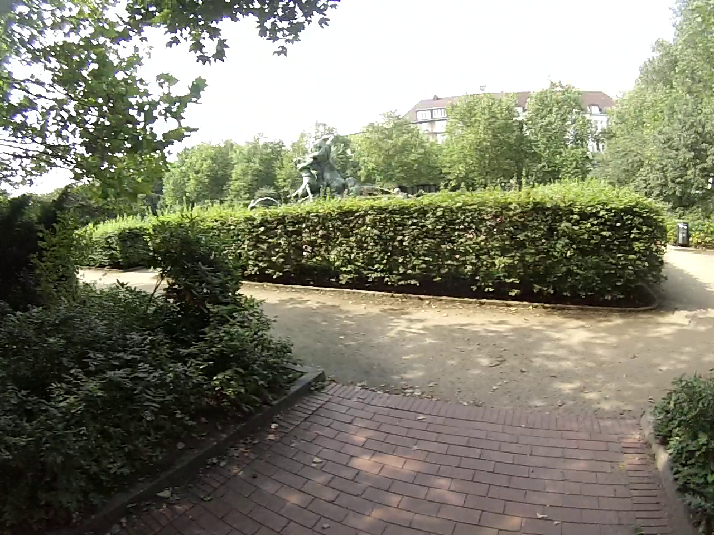
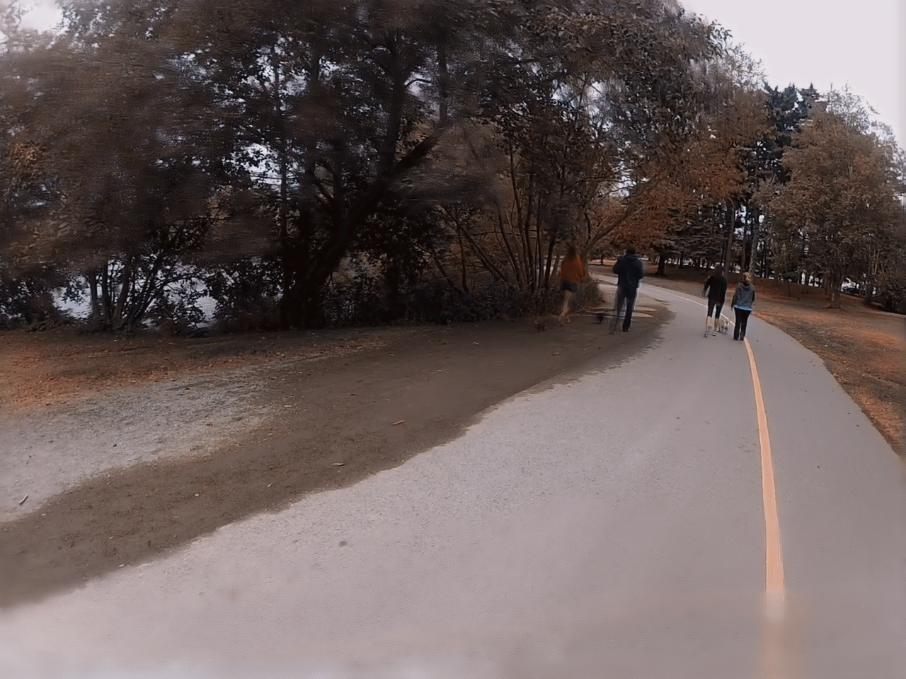

Video Stabilization of Hyperlapse Videos
Project by Nicolai Skutsch (n.skutsch@tu-berlin.de)

In their paper Deep Iterative Frame Interpolation for Full-frame Video Stabilization [1] J. Choi and I. S. Kweon proposed a novel approach on video stabilization using a pipeline consisting of multiple neural networks. If this method is applied to stabilize hyperlapse videos though, the results are not as good as expected. In this project, I therefore propose two new ways of creating and stabilizing hyperlapse videos by adapting the original approach from the paper.
Motivation
Videos captured from the point of view (POV) of the photographer by using a handheld camera are getting more and more popular for content creators in the internet and tourists to capture their own travel to another country. Filming while being in motion often leads to shaky footages which are not pleasant to watch though. Since modern technology allows capturing multiple hour long videos it becomes a popular choice to summarize all important information in a shorter video, for example a hyperlapse of the original video. These hyperlapse videos are mostly created by selecting key frames from the original video and joining those frames to a single video. For example, if the video should be speeded-up by the factor 6, every sixth frame is selected as key frame and all key frames are joined together to create the hyperlapse video. This approach comes with a problem though. If the oiginal video already contains jitter, the jitter in the hyperlapse will have a higher frequency which makes the video look even more shaky. This is also shown in the figures below.
The first graph shows the spatial jitter of the first 20 frames of an example video. The second graph shows the spatial jitter of the first 20 frames of the hyperlapse version of the same example video. It can clearly be seen that the frequency of the jitter is increased significantly in the hyperlapse version of the video because in that case only every fifth frame is used. Therefore, video stabilization is a highly desired approach to so minimize jitter in videos especially for hyperlapse videos.
Since they usually show better results, most approaches apply video stabilization as offline post-processing step. For that, state of the art deep neural networks [10][11][12] can be used. These are trained in a supervised manner by receiving an unstable and a stable video of the same scene and then learn how to create the stable video from the unstable data. Therefore, most approaches correct for the shaky camera movement and then crop the frame boundaries due to missing content. Other approaches additionally model the camera trajectory and then use a virtual camera with a stabilized path which also requires cropping at the frame boundaries though.
The paper this project is based on suggests a deep learning approach that works without cropping at the image borders and without having stable ground truth data so it can be trained in an unsupervised manner. In this project, the network from the paper is adapted to create a novel approach on video stabilization of hyperlapse videos.
Approach
The general idea of this appraoch is to stabilize the video by interpolating between two frames to create a new frame that does not contain the jitter of the original frame. The concept is described in more detail in the following figure.
The first line represents the single frames of the input video. In this example, stabilization is applied between the frames \(f_{i-1}\) and \(f_{i+1}\) which results in a new middle frame \(\hat{f}_{i}^{1}\) and would therefore compensate for unwanted movement in the original middle frame \(f_{i}\). This gets repeated for every frame pair \(f_{x-1}\) and \(f_{x+1}\) until the full set of frames has been interpolated. This method can then be applied iteratively to the already interpolated frames to further increase the visual stability. In the second iteration for example, the already interpolated frames \(\hat{f}_{i-1}^{1}\) and \(\hat{f}_{i+1}^{1}\) are used to create a new middle frame \(\hat{f}_{i}^{2}\).
Previous Approach
For interpolating between the frames, a pipeline of neural networks is used. The structure of the whole network during training as presented in the paper is shown in the following figure.
The network receives three frames \(f_{i-1}\), \(f_{s}\), and \(f_{i+1}\) as input and is trained to reconstruct a new stabilized middle frame \(\hat{f}_{i}\) from that input. \(f_{i-1}\) and \(f_{i+1}\) are the original frames next to the old middle frame \(f_{i}\) as described earlier. \(f_{s}\) is a pseudo ground truth frame which is a spatially translated version of \(f_{i}\) by a small random factor in a random direction. It is used because a real ground truth middle frame does not exist.
In the first step, the frames \(f_{i-1}\) and \(f_{i+1}\) are each warped towards the pseudo ground truth frame \(f_{s}\) by the pre-trained network FlowNet [2][3] resulting in two warped frames \(f_{w}^{-}\) and \(f_{w}^{+}\). These are then used as input for the first trainable network in the pipeline: a U-Net [13] which is trained to reconstruct \(f_{s}\) given the two warped frames as input. Since the result of the U-Net \(f_{int}\) tends to be blurry, another network is used to refine the textures. Therefore, the original middle frame \(f_{i}\) is warped towards the result of the U-Net \(f_{int}\). Then the warped frame and \(f_{int}\) are used as an input for the second trainable network in the pipeline: a ResNet [14] which is also trained to reconstruct \(f_{s}\). This results in the final interpolated frame \(\hat{f}_{i}\) which can then be further interpolated in multiple stabilization iterations. The impact of the ResNet can be seen in the following figure.

The window highlighted in red shows the texture the U-Net produces during stabilization. The window highlighted in blue shows the texture of the same frame after being processed by the ResNet. It can clearly be seen that the textures look more refined and sharp.
As suggested in the paper, this network is then trained at least 200 epochs on multiple video sequences. As dataset, the DAVIS dataset [5] has been used. As loss function, the U-Net and the ResNet part of the network both use a combination of the \(l_{1}\) loss and the perceputal loss [16]. The final loss is defined by their unweighted sum. \[Loss = \Big|\Big| f_{s} - \hat{f}_{i} \Big|\Big|_{1} + \Big|\Big| \phi(f_{s}) - \phi(\hat{f}_{i}) \Big|\Big|_{2}^{2}\]
After the network has been trained, it can be used for video stabilization. Therefore, the pipeline is slightly changed. The testing pipeline is shown in more detail in the following figure.
For testing, a pseudo ground truth frame \(f_{s}\) is no longer needed. Instead of warping the frames \(f_{i-1}\) and \(f_{i+1}\) towards \(f_{s}\), they are now warped halfway towards each other. These two warping results \(f_{w}^{-}\) and \(f_{w}^{+}\) are then used as in the training pipeline. The final stabilzed result is the output of the ResNet. If applied to hyperlapse videos, the network only takes the key frames as an input and creates stabilized key frames.
Modified Approach
Since only using the key frames as input for the network does not use the data of the non-key frames at all, two novel approaches are presented in this project: an iterative and a batch-wise approach which both use the additional information of the non-key frames to improve the stabilization result. When using more frames in between the two key frames, the network has more texture information which it can use to further refine the texture.
Iterative Approach
For the iterative approach, all non-key frames are used to train and evaluate the ResNet part of the network iteratively. The new structure of the network can be seen in the following figure (only showing the training pipeline since the ResNet part is the same for both training and testing pipeline).
For a speed-up of 6 there are eleven different frames between \(f_{i-1}\) and \(f_{i+1}\). In each iteration, the next of those eleven frames is used as \(f_{i}\) for training the ResNet. The output of the ResNet is then looped back to replace the previous \(f_{int}\) and then the next iteration is started. After each iteration, the loss is calculated and the parameters of the network are adjusted. The advantage of training the network iteratively is that the speed-up is variable because the number of non-key frames can differ. It is therefore possible to train the network with a speed-up of 6 but use it for stabilizing videos with a speed-up of 2.
Batch-wise Approach
For the batch-wise approach, all non-key frames are used at once to train and evaluate the ResNet part of the network in one batch. The new structure of the network can be seen in the following figure (only showing the training pipeline since the ResNet part is the same for both training and testing pipeline).
For a speed-up of 6 there are eleven different frames between \(f_{i-1}\) and \(f_{i+1}\). These eleven frames are all used as input to the FlowNet separately, the results of the FlowNet are then concatenated and the the whole batch of warped frames is used as input for the ResNet. The advantage of training the network batch-wise is that the training is faster than for the iterative approach and the loss only needs to be propagated once through the network. On the other hand, the speed-up for the batch approach is already defined and fixed by the architecture, since the input dimensions and number of features change with the number of non-key frames.
Improved Key Frame Selection
Another advantage of the iterative approach is that the key frame selection can be improved since the number of non-key frames does not need to be the same for each frame pair \(f_{i-1}\) and \(f_{i+1}\). That is why it was also possible to test an improved key frame selection approach [4] combined with the iterative approach during stabilization/testing. The improved key frame selection is based on the homography between frames in a certain neighborhood. The approach selects the frames based on the homographies and the speed-up, so that it minimizes the jitter/translation between the frames. For a speed-up of 6, this approach might not select frames 1, 7, 13, 19, and 25 as the naiv approach would, but for example frames 1, 6, 14, 21, and 26 to reduce the inital jitter. This selection is based on the cost of the translation between frames and a penalty for not sticking to the desired speed-up. If the initial key frames are already more stable, the stabilization result will also be more stable as shown in the next section.
Results
To evaluate the results, the different approaches have been tested on four diffent videos. These video differ in the kind movement of the photographer, the resulting motion of the camera, and the kind of scenery that has been filmed. All of them are taken from the point of view of the photographer. The exact videos that have been used can be seen below.
Bike Ride (Park)
Bike Ride (Downhill)
Walk (Park)
Walk (Hallway)
The first video [8] was taken while riding a bike and therefore the motion is of the camera is quick. It shows the trail through a park going past a fountain. The second video [8] was captured while going for a walk which is why the motion is slower compared to the first video. It shows the road through a park near a lake. The third video was taken while riding a mountain bike downhill [15] and is therefore very shaky with a lot of movement. It mainly shows a stony path down a hill or mountain. The fourth video [9] was captured while slowly walking which is why the original video is already quiet stable. It shows the hallway inside a building.
Qualitative Results
Firstly, the different approaches are compared visually using the hallway video. For all approaches, the video has been stabilized for one iteration with a speed-up by factor 6 and a skip factor of 0. For the naiv approach, only the key frames have been used as input whereas for the the novel approaches the non-key frames have been used additionally to the key frames for texture refinements. The results can be seen below.
Original
Naiv
Batch-wise
Hyperlapse
Iterative
Iterative + Improved Key Frame Selection
The first video is the original video which was used as an input for the newly trained approaches without any stabilization applied to it. The second video is also the original unstabilzed version but speeded-up by the factor 6 creating a hyperlapse version of the original video. To get a baseline to compare the new approaches with, the third video is the result of the original network from the paper applied to only the key frames so the hyperlapse version of the input video. The result of the iterative approach is shown in the fourth video and the result of the batch-wise approach in the fifth video. The sixth video is the result of the iterative approach with improved key frame selection.
It can be seen that the original video is already a bit shaky since the photographer is moving and the camera equipment was not stabilized. The jitter produced by each step can clearly be noticed. Speeding-up the video increases the frequency of the jitter. Therefore, the hyperlapse version of the video seems even more unstable and shaky then the version in real-time. Although the camera path in the result of the naiv approach seems a bit more stable, a small amount of jitter can still be seen. This jitter gets even less when looking at the results of the iterative and batch-wise approach, which are very similar. Adding the improved key frame selection to the iterative approach does further increase the stability compared to even the iterative or batch-wise approach and produces the best result.
Besides the different degree of stability of the results it can be observed that all approaches create artifacts and change the overall color of the frames. These aspects are further discussed in the section Problems and Challenges.
Quantitative Results
Secondly, the different approaches are compared based on different stability metrics [6][7]. These metrics are a measure of the similarity between the content of two neighboring frame, and the transformation necessary to match one frame with its neighboring frames. The metrics that have been used are now described in more detail.
Peak Signal-to-Noise Ratio (PSNR)
A simple and widely used metric is the peak signal-to-noise ratio (PSNR). It is defined by the ratio between the mean and the variance of a signal. For two neighboring frames, the PSNR is calculted by converting the colored images to a monochrom images, calculate the mean squared error pixel-wise, and then set it into relation with the maximum possible intensity values. The exact formula for the PSNR between the frames \(F_{1}\) and \(F_{2}\) of width \(w\), height \(h\), and the maximum intensity \(MAX\) is shown below. \[\mathrm{MSE}(F_{1},F_{2}) = \frac{1}{w \cdot h} \sum_{x=0}^{w-1} \sum_{y=0}^{h-1} \big( F_{1}(x,y) - F_{2}(x,y) \big)^{2}\] \[\mathrm{PSNR}(F_{1},F_{2}) = 10 \cdot \log_{10} \Bigg( \frac{MAX^{2}}{\mathrm{MSE}(F_{1},F_{2})} \Bigg)\]
Structural Similarity (SSIM)
It has been observed that the PSNR does not match the perceived visual quality very well. That is why the structural similarity (SSIM) metric has been introduced. It compares local patterns of pixel intensities between two images and normalizes for luminance and contrast. The metric is applied window-wise and considers luminance, contrast, and structure of the images. The exact formula for the SSIM between the frames \(F_{1}\) and \(F_{2}\) using two constants \(c_{1}\) and \(c_{2}\) is shown below. \[\mathrm{SSIM}(F_{1},F_{2}) = \frac{(2\mu_{F_{1}}\mu_{F_{2}} + c_{1}) (2\sigma_{F_{1}F_{2}} + c_{2})}{(\mu_{F_{1}}^{2} + \mu_{F_{2}}^{2} + c_{1}) (\sigma_{F_{1}}^{2} + \sigma_{F_{2}}^{2} + c_{2})}\]
Learned Perceptual Image Patch Similarity (LPIPS)
Since the perception of humans is often still not represented well enough by these metrics, the learned perceptual image patch similarity (LPIPS) loss as been proposed. Therefore, a deep neural network is used to evaluate how similar two images look like. In this project AlexNet is used since it is trained to extract complex visual features from images.
Stability
The previously introduced metrics only compare the content of two frames directly to each other. For the stability metric (instead of comparing the images pixel-wise) a homography between two neighboring frames is calculated to evaluate how much the camera position has changed. The more transformation is necessary to transform one frame into its neighboring frame (represented by the homography), the less stable the video is.
For all approaches, all test videos have been stabilized for one iteration with a speed-up by factor 6 and a skip factor of 0. For the naiv approach, only the key frames have been used as input whereas for the the novel approaches the non-key frames have been used additionally to the key frames for texture refinements. For each approach, the metrics have been calculated on each video and then averaged to get a final score for this approach. For the PSNR, SSIM, and stability higher scores are better whereas for the LPIPS lower scores are better. The results can be seen below.
| PSNR \((\uparrow)\) | SSIM \((\uparrow)\) | LPIPS \((\downarrow)\) | Stability \((\uparrow)\) | |
|---|---|---|---|---|
| Original | 15.338 | 0.418 | 0.406 | 0.756 |
| Naiv | 16.411 | 0.468 | 0.409 | 0.755 |
| Iterative | 18.645 | 0.572 | 0.351 | 0.799 |
| Batch-wise | 18.297 | 0.534 | 0.383 | 0.746 |
| Iterative + Improved Key Frame Selection | 20.270 | 0.632 | 0.286 | 0.770 |
The results show that the hyperlapse videos stabilized by the original network from the paper (naiv approach) are only slightly more stable than the original video. The iterative and batch-wise approach though clearly outperform the naiv approach with the iterative approach performing a little better. Adding the improved key frame selection to the iterative approach does increase the performance even more as it could already be seen for the hallway example in the previous section. Removing the video of the biker riding downhill even increases the difference in performance between the original approach and the novel approaches. That indicates the methods all perform better on videos with less movement which makes the difference between the performance of the approaches more noticeable.
However, these results are not always represented well by the stability metric. This may be caused by errors in the implementation of this metric which was already implemented by the authors of the paper. A variance in the score can also occur when two frames cannot be matched or the calculation of a homography between two frames fails.
Summary
All in all, the novel approaches presented in this project did improve the results compared to the originally proposed network if applied to hyperlapse videos. Comparing the novel approaches which each other, the iterative approach performs better than the batch-wise approach, especially when considering that once the network is trained on one speed-up it can be used to evaluate multiple speed-ups, and that improved key frame selection can be added to it.
Problems and Challenges
During the work on this project, many problems and challenges have been encountered. Since the authors did not provide their training script, it needed to be written from scratch. Furthermore, the training process was also not described well enough to reconstruct the original training procedures with all its parameters. That is why a lot of parameters had to be tuned to achieve comparable results.
After finishing the training script, the training time was much higher than described in the paper. This problem could be solved by replacing the function extract_patches_2d from the sklearn module, which was used for extracting a patch of a certain size from the image, with a self-written function using numpy.
Training the network iteratively worked quiet fast but the batch-wise approach did only produce black frames at the beginning. Varying the learning rate or changing the number of features did not solve the problem. The network did produce reasonable results though after changing the input of the first layer of the ResNet and increasing the batch-size though. Instead of using the whole output of the FlowNet (which warps the images towards each other) only using the warping result works for the batch-wise approach.
After both approaches did work, the results could be compared. As mentioned in the previous section though, the results contain some artifacts and are not colored correctly. These problems are addressed in more detail in the following.
Artifacts
As mentioned in the paper, the original approach already produces artifacts while stabilizing videos. These artifacts mostly appear at the image borders and can be described as blurred texture. It can be observed that these artifacts appear more often if the camera movement is faster and therefore less image content matches across neighboring frames. This also applies to sudden and quick camera movements. In these cases, not only the image borders are blurred but the the artifacts may appear across the whole image. Two neagtive examples of the artifacts are shown below.
Original
Stabilized

The images show the original frame on the left and the frame at the same time of the video after stabilization has been applied on the right. At these moments in the videos, the movement of the camera was very fast. That is why it was hard for the network to reconstruct a realistic looking middle frame. This results in a lot of artifacts all over the image.
Color Accuracy
Besides the artifacts in the results, the network was not able to reconstruct the correct color of the images. The wrong coloring is dependent on the trained network and therefore different input videos are all colored wrongly in the same way. If a network is trained with different hyperparamters, the coloring does change. The concrete cause for this problem could not be found yet. Two neagtive examples of the wrong coloring are shown below.
Original
Stabilized
The images show the original frame on the left and the frame at the same time of the video after stabilization has been applied on the right. It can be seen that the stabilized frame looks more brownish overall and almost does not contain the color green anymore. It can further be noticed that the frames from two different videos are wrongly colored in the same way though.
Future Work
To be able to generate statisfying results, first of all the issues mentioned in the previous section need to be fixed, namely the artifacts and the wrong coloring. The artifacts might be reduced by replacing the ResNet with another neural network or different approach which performs a similar task. Another possible approach would be increasing the training dataset since the DAVIS dataset only contains a small amount of short videos. Since the cause of the coloring problem could still not be identified, a proposal on how to solve this problem cannot be made. The assumption is made that the network falls into a certain state after the first iterations which it cannot leave and determines the balance of colors in the image because it has been observed that already the first results of the network are colored in the way the final results are.
If these problems are solved, the project could be further extended by only selecting specific non-key frames which would improve the result to increase the performance of the network. Another approach of improving the whole network would be to replace some of its components by networks that might be more suitable.
If you have any questions regarding my work on this project or want to discuss further improvements, do not hesitate to contact me via e-mail: n.skutsch@tu-berlin.de.
References
- Choi, J., & Kweon, I. S. (2019, October). DIFRINT: Deep Iterative Frame Interpolation for Full-Frame Video Stabilization. In 2019 IEEE/CVF International Conference on Computer Vision Workshop (ICCVW) (pp. 3732-3736). IEEE.
- Ilg, E., Mayer, N., Saikia, T., Keuper, M., Dosovitskiy, A., & Brox, T. (2017). Flownet 2.0: Evolution of Optical Flow Estimation with Deep Networks. In Proceedings of the IEEE Conference on Computer Vision and Pattern Recognition (pp. 2462-2470).
- Sun, D., Yang, X., Liu, M. Y., & Kautz, J. (2018). PWC-Net: CNNs for Optical Flow using Pyramid, Warping, and Cost Volume. In Proceedings of the IEEE Conference on Computer Vision and Pattern Recognition (pp. 8934-8943).
- Joshi, N., Kienzle, W., Toelle, M., Uyttendaele, M., & Cohen, M. F. (2015). Real-time Hyperlapse Creation via Optimal Frame Selection. ACM Transactions on Graphics (TOG), 34(4), 1-9.
- Caelles, S., Pont-Tuset, J., Perazzi, F., Montes, A., Maninis, K. K., & Van Gool, L. (2019). The 2019 Davis Challenge on VOS: Unsupervised Multi-object Segmentation. arXiv preprint arXiv:1905.00737.
- Wang, Z., Bovik, A. C., Sheikh, H. R., & Simoncelli, E. P. (2004). Image Quality Assessment: From Error Visibility to Structural Similarity. IEEE Transactions on Image Processing, 13(4), 600-612.
- Zhang, R., Isola, P., Efros, A. A., Shechtman, E., & Wang, O. (2018). The Unreasonable Effectiveness of Deep Features as a Perceptual Metric. In Proceedings of the IEEE Conference on Computer Vision and Pattern Recognition (pp. 586-595).
- Kopf, J., Cohen, M. F., & Szeliski, R. (2014). First-person Hyper-lapse Videos. ACM Transactions on Graphics (TOG), 33(4), 1-10.
- Silva, M. M., Ramos, W. L. S., Ferreira, J. P. K., Campos, M. F. M., & Nascimento, E. R. (2016, October). Towards Semantic Fast-forward and Stabilized Egocentric Videos. In European Conference on Computer Vision (pp. 557-571). Springer, Cham.
- Liu, F., Gleicher, M., Jin, H., & Agarwala, A. (2009). Content-preserving Warps for 3D Video Stabilization. ACM Transactions on Graphics (ToG), 28(3), 1-9.
- Gleicher, M. L., & Liu, F. (2007, September). Re-cinematography: Improving the Camera Dynamics of Casual Video. In Proceedings of the 15th ACM International Conference on Multimedia (pp. 27-36).
- Wang, M., Yang, G. Y., Lin, J. K., Zhang, S. H., Shamir, A., Lu, S. P., & Hu, S. M. (2018). Deep Online Video Stabilization with Multi-grid Warping Transformation Learning. IEEE Transactions on Image Processing, 28(5), 2283-2292.
- Ronneberger, O., Fischer, P., & Brox, T. (2015, October). U-Net: Convolutional Networks for Biomedical Image Segmentation. In International Conference on Medical Image Computing and Computer-assisted Intervention (pp. 234-241). Springer, Cham.
- He, K., Zhang, X., Ren, S., & Sun, J. (2016). Deep Residual Learning for Image Recognition. In Proceedings of the IEEE Conference on Computer Vision and Pattern Recognition (pp. 770-778).
- Red Bull. Downhill MTB GoPro Filmaufnahmen in den schottischen Highlands. https://youtu.be/igp9sJkuAnU, last retrieved on 27.08.2021.
- Corley, I. VGG Loss. https://pytorch-enhance.readthedocs.io/en/latest/_modules/torch_enhance/losses/vgg.html, last retrieved on 13.06.2021.